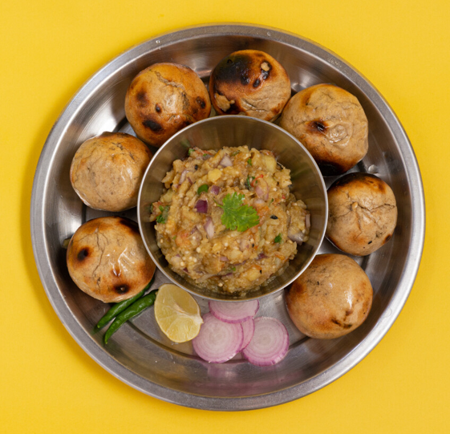

Litti Chokha Recipe

Description
Litti Chokha is a very traditional and rustic dish of spiced sattu
(roasted black chickpea flour) stuffed whole wheat dough balls called
Litti. This is classically paired with a simple veggie mash essentially
with onion, garlic, green chilies and mustard oil, called the chokha.
It is a delicacy in the food culture of both Bihar as well as Jharkhand.
Ingredients
-
For the dough
- Wheat Flour - 440 g (2 cups)
- Ajwain (Carom Seeds) - 1/2 tsp
- Ghee - 2 tbsp
- Curd - 3/4 cup
- Baking Soda - 1/2 tsp
- Salt - 3/4 tsp
-
For the stuffing
- Sattu (Roasted Gram Flour)- 200 g (1 cup)
- Ginger - An inch long piece
- Green Chilly - 2 to 4 pieces
- Dhaniya (Green Coriander) - 1/2 cup (finely Chopped)
- Jeera (Cumin Seeds) - 1 tsp
- Ajwain (Carom Seeds) - 1 tsp
- Mustard Oil - 1 tsp
- Pickle Spices - 1 tbsp
- Lemon Juice - Of 1 Lemon
- Salt - according to taste
-
For the Chokha
- Brinjal - 400 g (1 or 2)
- Tomatoes - 250 g (4 medium sized)
- Green chillies - 2 to 4 (finely chopped)
- Ginger - 1.5 inch long piece (finely chopped)
- Dhaniya (Green Coriander) - 2 tbsp (finely chopped)
- Mustard Oil - 1 to 2 tsp
- Salt - according to taste
Steps
-
Preparation of dough for litti
- Filter the flour and keep it in a utensil.
- Add Ghee, Ajwain, baking soda and salt in flour, and mix well.
- Whisk the curd and mix it in the flour.
- Knead a soft dough using warm water.
- Cover the dough and keep aside for 30 minutes.
- The dough is ready.
-
Preparation of the stuffing for the Litti
- Wash, peel and finely chop the ginger.
- Wash and finely chop the green chillies after removing stem.
- Wash, clean and finely chop dhaniya (coriander) leaves.
- Add Sattu, Jeera, Ajwain, green chillies, coriander, lemon
juice, salt, mustard oil and picle spices in a bowl.
- Mix all the ingredients thoroughly.
- If the stuffing (Pitthi) seems dry, add 1-2 spoons of water.
- The Sattu stuffing (Pitthi) for the Litti is ready.
-
Making the Litti
- Break medium sized pieces dough.
- Press the pieces of the dough with your fingers to expand
to 2-3 inches in diameter.
- Place 1 to 1.5 tsp Sattu stuffing (Pitthi) on it, wrap up
the dough piece and close from all sides.
- Press this stuffed piece to flatten it a bit
- Litti is ready for frying.
- Heat the Tandoor(furnace), place the stuffed pieces of dough
in the Tandoor.
- Cook the Litti by turning sides regularly till they turn brown.
-
Making Chokha for Litti
- Cook the brinjal and tomatoes on open flame after washing.
- Allow them to cool and peel their skins.
- Put them in a bowl and mash them with a sppon.
- Put the chopped spices, salt, oil and mix properly.
- The Brinjal Chokha is ready.
-
Serving the Litti Chokha
- Dip hot Litti in melted Ghee to coat it completely.
- Litti can also be broken from centre for coating in Ghee.
- Serve the Litti with Chokha and some freshly cut onions.
- Enjoy the delicious, flavorful Litti and Chokha.